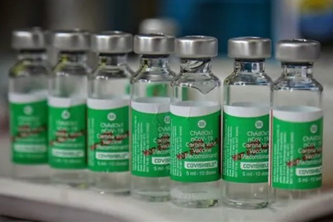

India began administration of COVID-19 vaccines on 16 January 2021. As of 27 July 2021, India has administered over 446 million doses overall, including first and second doses of the currently-approved vaccines. India initially approved the Oxford–AstraZeneca vaccine (manufactured under license by Serum Institute of India under the trade name Covishield) and Covaxin (a vaccine developed locally by Bharat Biotech). They have since been joined by the Sputnik V (manufactured under license by Dr. Reddy's Laboratories) and Moderna vaccines, and other vaccine candidates undergoing local clinical trials. In September 2020, India's Health minister Harsh Vardhan stated that the country planned to approve and begin distribution of a vaccine by the first quarter of 2021. The first recipients were to be 30 million health workers directly dealing with COVID patients. On 1 January 2021, the Drug Controller General of India (DCGI) approved emergency use of the Oxford–AstraZeneca vaccine (local trade name "Covishield"). On 2 January, the DCGI also granted an interim emergency use authorisation to BBV152 (trade name "Covaxin"), a domestic vaccine developed by Bharat Biotech in association with the Indian Council of Medical Research and National Institute of Virology. This approval was met with some concern, as the vaccine had not then completed phase 3 clinical trials. Due to this status, those receiving Covaxin were required to sign a consent form, while some states chose to relegate Covaxin to a "buffer stock" and primarily distribute Covishield. India began its vaccination programme on 16 January 2021, operating 3,006 vaccination centres on the onset. Each vaccination centre will offer either Covishield or Covaxin, but not both.
165,714 people were vaccinated on the first day of availability. Difficulties in uploading beneficiary lists at some sites caused delays. In the first three days, 631,417 people were vaccinated. Of these, 0.18% reported side-effects and nine people (0.002%) were admitted to hospitals for observation and treatment. Within those first days, there were concerns about low turnout, due to a combination of vaccine safety concerns, technical problems with the software used, and misinformation. The first phase of the rollout involved health workers and frontline workers including police, paramilitary forces, sanitation workers, and disaster management volunteers. By 1 March, only 14 million healthcare and frontline workers had been vaccinated, falling short of the original goal of 30 million. The next phase of the vaccine rollout covered all residents over the age of 60, residents between the ages of 45 and 60 with one or more qualifying comorbidities, and any health care or frontline worker that did not receive a dose during phase 1. Online registration began on 1 March via the Aarogya Setu app and Co-WIN ("Winning over COVID-19") website. Amid the beginnings of a major second wave of infections in the country, vaccine exports were suspended in March 2021, and the government ordered 110 million Covishield doses from SII. The company aims to produce 100 million doses per month, but by May 2021 its production capacity was only 60–70 million doses. Following the conclusion of its trial, the DCGI issued a standard emergency use authorisation to Covaxin on 11 March 2021. From 1 April, eligibility was extended to all residents over the age of 45. On 8 April, Prime Minister Narendra Modi called for a four-day Teeka Utsav ("Vaccine Festival") from 11 to 14 April, with a goal to increase the pace of the program by vaccinating as many eligible residents as possible. By the end of the Utsav, India had reached a total of over 111 million vaccine doses to-date.
Read more here